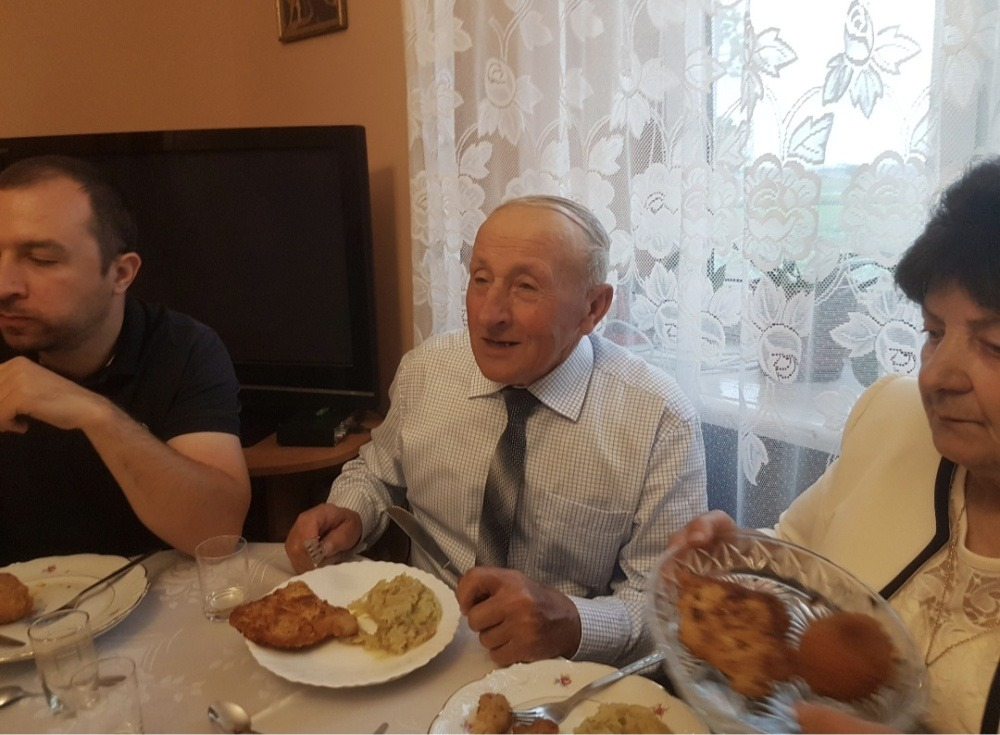

„Nie umiera ten, kto trwa w sercach i pamięci żywych.”
Wspomnienie
Strona poświęcona pamięci Jerzego Borowczyka. Tutaj możesz zamieścić historię życia, wspomnienia oraz najważniejsze chwile z życia taty.
Galeria zdjęć
